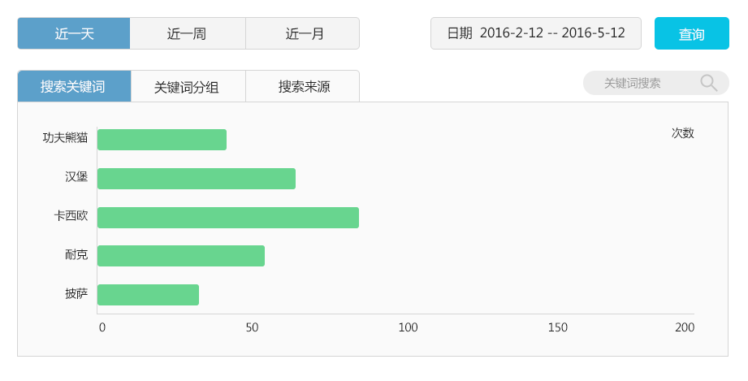

# projectaccess.html
<%inherit file="base.html" />

<div class="wrapper nsWrapper">
    <!--导航-->
    <%include file="nav.html" />
    <!--右侧功能栏-->
    <div class="projects">
        <%include file="bread_nav.html" />
        <div class="widget">
            <a href="javascript:;" class="btnbluesmall">导出</a>
        </div>
        <div class="tabbox ns_table">
            
            
        </div>
    </div>
</div>
